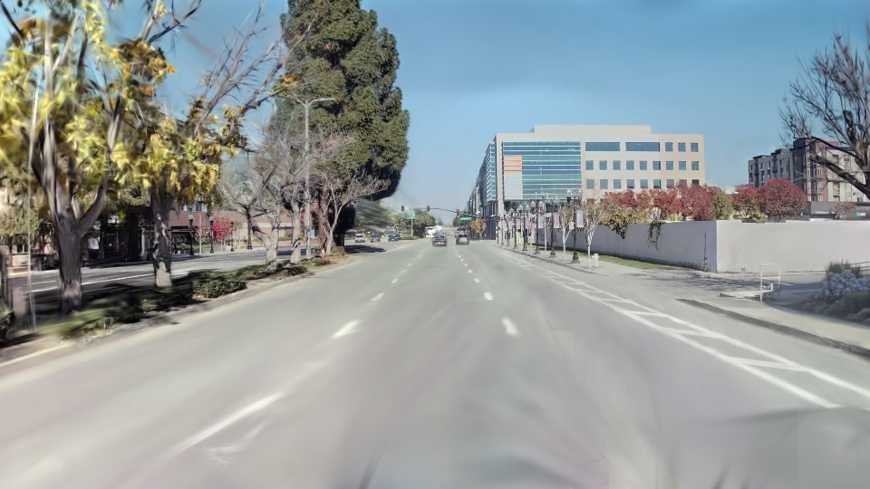
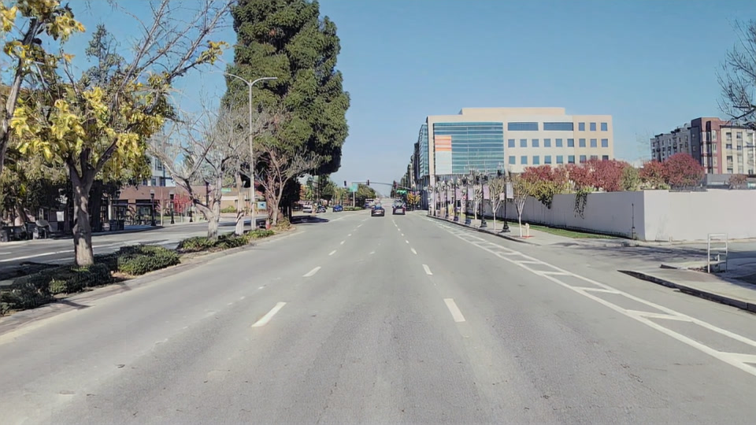

MSc Thesis / Autonomous Driving
Photorealistic Closed-Loop Simulation for Autonomous Driving using 3D Gaussian Splatting
Supervisors: Prof. Pedro U. Lima and Dr. Pedro Monteiro
01 / Reconstructed scenes
Five cameras, one reconstruction
Different recorded drives, the same training configuration. Each camera view is rendered from a single shared set of Gaussians.
Video unavailable. Open the selected MP4.
02 / Overview
Abstract
Validating a driving policy requires closed-loop simulation, in which the policy acts on its environment and receives the consequences as its next observation. Replaying a recorded log cannot provide that. Photorealistic reconstructions of a real drive stay faithful only along the recorded path, with the vehicles moving through it baked into the background.
This thesis builds a closed-loop simulator from a single recorded drive, using an arbitrary camera rig and a consumer GPU. A 3D Gaussian Splatting reconstruction represents each moving vehicle as a separately controllable rigid node, posed by a multi-camera tracker and a kinematic fit solved before training. A pseudo-view loop extends the scene off that path, rendering it from laterally shifted trajectories, cleaning those renders with a reference-conditioned diffusion model and banking them as training data, so the generative component is spent offline.
Thirteen WayveScenes101 scenes were trained under one configuration. The final models reached a median PSNR of 24.12 dB on held-out frames, while the vehicles rendered 4.2 to 8.6 dB below the frame around them. KID rose with lateral offset in every scene, and the pseudo-view bank cut the 3 m penalty in 14 of 16 curves, at a cost on the recorded path. The simulator rendered one camera at 19.7–27.7 frames per second, above the 10 Hz recording rate.
03 / Pipeline features
Inside the pipeline
Separate dynamic agents, off-path rendering, and the pseudo-view loop.
Dynamic agents
Tracked vehicles remain separate from the background. They can be repositioned or replaced in the simulator; traffic is controllable rather than reactive, and collision physics is not modeled.
Vehicles separate from the background
Beyond the recorded path
Off-path renders are cleaned with a reference-conditioned diffusion model and banked as training data. The loop transfers that supervision into the reconstruction offline.
Moving away from the capture trajectory
Reference-conditioned cleaning
Shifted render

Diffusion-cleaned image
